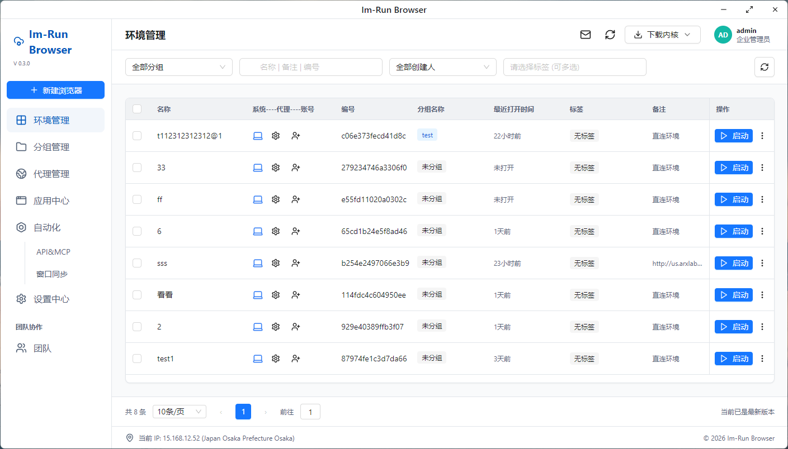

独立浏览器环境
每个配置文件独立缓存、代理、启动页、Cookie、标签和备注，支持编辑、复制、导出与批量操作。
Im-Run Browser 将独立浏览器环境、真实内核、代理区域、指纹注入和自动化 API 收束到一个桌面管理壳里，让批量运营更稳定、更可控。

操作工作台
每个配置文件独立缓存、代理、启动页、Cookie、标签和备注，支持编辑、复制、导出与批量操作。
操作系统、User-Agent、分辨率、语言、时区和 WebGL 元数据保持一致，降低异常组合。
内置 Chrome for Testing 历史版本下载，版本化管理下载进度、解压状态清晰可见。
支持 HTTP/SOCKS5 代理配置，管理壳展示真实出口 IP 与区域，后续可接入批量检测。
面向多窗口操作场景设计，可扩展同步点击、输入、滚动和窗口编排能力。
围绕 Puppeteer、Playwright、CDP 设计，适合批量任务和内外部系统集成。
安全架构
产品截图
桌面版下载